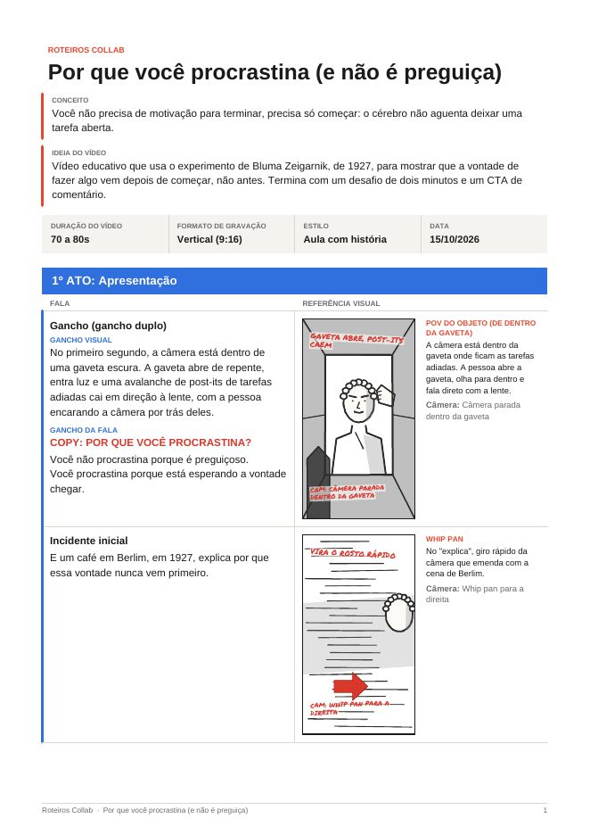

Roteiros
Collab
(2026)Skill para o Claude
Skill para o Claude que gera roteiros virais.
Feita a partir dos roteiros da Collab, do Arthur Miller e da Giullya Becker. Ler mais
(02)Apresentação
Collab,
Roteiros virais
apresentação
Sobre a skill
Como essa skill nasceu
A Roteiros da Collab é uma skill para o Claude. Uma skill funciona como um manual que o Claude lê antes de trabalhar. Com ela instalada, ele já sabe como a gente escreve roteiro.
Feita a partir de roteiros de verdade
Ninguém inventou essas regras do zero. A skill foi construída em cima de roteiros que já funcionam: os roteiros da própria Collab, os roteiros do Arthur Miller e os roteiros da Giullya Becker.
A gente desmontou esses vídeos parte por parte. Olhamos como cada um prende a atenção nos primeiros segundos, como a tensão vai subindo, onde entra a virada e como o vídeo termina rápido. Depois transformamos esse jeito de contar história em regras que o Claude segue.
Por isso, todos os roteiros que a skill gera são baseados nos roteiros deles. A estrutura, o ritmo e os tipos de gancho vêm dali.
E o olhar de câmera da skill foi treinado com o Eyecannndy, uma biblioteca de técnicas de câmera do cinema e da publicidade. Todos os storyboards e as descrições de cena nascem de lá: cada take do roteiro vem dessa biblioteca, pronto para gravar.
Para que ela serve
O objetivo é otimizar o nosso tempo na hora de criar roteiro. Aquela parte demorada de pegar uma ideia solta e encaixar numa estrutura que prende o público fica com o Claude. O nosso tempo vai para o que importa: pensar a ideia.
E isso não quer dizer que o Claude escreve tudo. Às vezes você manda só o tema e ele monta o roteiro inteiro. Às vezes você manda a ideia, o conceito e até umas falas prontas, e ele só estrutura. É uma criação conjunta entre a nossa cabeça e o Claude.
Baseada em
Na prática
O tema, a ideia, o conceito ou as falas que já tem.
Encaixa tudo no arco de 3 atos, com gancho, virada e CTA.
Pede mudanças até o roteiro ficar com a sua cara.
Cada roteiro tem
Uma pequena história em 3 atos. A tensão sobe devagar até o clímax e depois o vídeo termina rápido, o mesmo desenho dos vídeos de referência.
(03)Passo a passo
Do zero,
Ao primeiro roteiro
TutorialTutorial
Siga um passo de cada vez, com calma. Não precisa saber nada de tecnologia. Você vai precisar de:
Instalar o Claude
-
Entre no site do Claude
Abra o navegador (Chrome, Safari, o que você usa) e digite na barra de cima:
claude.ai/download. Aperte Enter.Clique no botão de baixar. O site já mostra a versão certa para o seu computador (Windows ou Mac).
-
Instale o programa
No Windows: abra a pasta Downloads e dê dois cliques no arquivo do Claude. Ele instala sozinho.
No Mac: dê dois cliques no arquivo baixado e arraste o ícone do Claude para a pasta Aplicativos.
Se aparecer uma pergunta tipo "Deseja permitir?", clique em Sim ou Abrir.
-
Abra o Claude e entre na sua conta
Abra o Claude (ele aparece no menu Iniciar ou na pasta Aplicativos). Entre com o seu e-mail ou com o Google.
Não quer instalar nada? Dá para fazer tudo pelo navegador, em
claude.ai. Os próximos passos são iguais.
Instalar a skill
-
Baixe o arquivo da skill
Vá na página 4. Downloads deste site e clique em Baixar a skill (.zip). O arquivo
roteiros-collab.zipvai para a sua pasta Downloads.Não abra nem descompacte o .zip. O Claude precisa dele fechado, do jeito que veio.
-
Abra as Configurações
No Claude, olhe para o canto de baixo, à esquerda. Clique no seu nome (ou na bolinha com a sua inicial).
Vai abrir um menu. Clique em Configurações.
-
Entre em Capacidades
No menu da esquerda das Configurações, clique em Capacidades.
Procure a opção Execução de código e criação de arquivos e deixe ela ligada (a chavinha fica colorida). A skill precisa disso para criar o PDF.
-
Envie a skill
Ainda em Capacidades, desça a tela até a parte Skills. Clique no botão de adicionar ou enviar skill.
Vai abrir uma janela. Escolha o arquivo
roteiros-collab.zipna pasta Downloads (ou arraste ele para dentro da janela).O nome do botão pode mudar um pouquinho de uma versão para outra, mas fica sempre nessa parte de Skills.
-
Confira se ficou ligada
A Roteiros Collab vai aparecer na lista de Skills. Veja se a chavinha do lado dela está ligada.
Pronto, a skill está instalada. Você só faz isso uma vez.
Usar a skill
-
Peça o seu roteiro
Abra uma conversa nova no Claude e escreva assim, trocando o tema pelo seu:
Roteiros Collab: roteiro sobre [tema]Exemplo: "Roteiros Collab: roteiro sobre procrastinação". Se quiser, conte mais: a ideia que você teve, o conceito, a duração, se é collab com alguma marca.
-
Receba o roteiro e o PDF
O Claude escreve o roteiro completo no chat, parte por parte: gancho, conflito, virada, clímax e CTA, com as falas e os takes de câmera.
No fim ele entrega um PDF com storyboard. Clique nele para baixar.
-
Ajuste junto com ele
Não gostou de alguma parte? É só pedir. Escreva, por exemplo: "deixa o gancho mais curto", "usa essa fala que eu escrevi" ou "muda o formato para mini-filme".
Ele refaz o roteiro e o PDF. Quanto mais da sua ideia você mandar, mais o roteiro fica com a sua cara.
Confira se a opção "Execução de código e criação de arquivos" está ligada em Capacidades. A parte de Skills costuma aparecer logo abaixo. Se mesmo assim não aparecer, o seu plano do Claude pode não ter Skills.
Envie o arquivo roteiros-collab.zip do jeito que ele foi baixado, sem descompactar e sem renomear.
Comece a mensagem com "Roteiros Collab:" e veja se a chavinha da skill está ligada em Configurações.
— Roteiros da Collab —
Pegue a skill
e o roteiro
À esquerda, o arquivo para instalar no Claude. À direita, um roteiro de verdade que a skill criou, para você ver o que vem pronto.
A skill
O que tem dentro
SKILL.mdas instruções da skillreferences/estruturas e takes criativosscripts/gerar_pdf.pymonta o PDF com storyboardassets/a fonte das anotaçõesexemplo/o roteiro de exemplo
Não descompacte. Envie o .zip inteiro no Claude, como mostra o tutorial.
Por que você procrastina (e não é preguiça)
